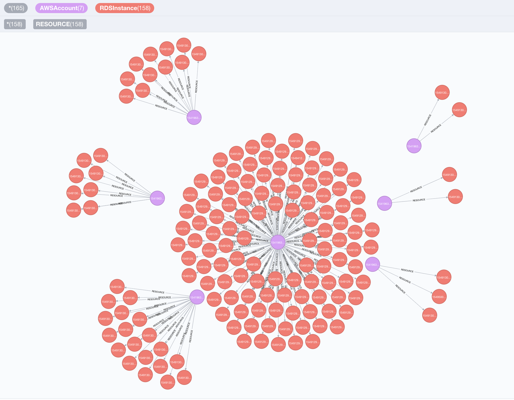

What is Cartography?¶
Cartography is a Python tool that consolidates infrastructure assets and the relationships between them in an intuitive graph view powered by a Neo4j database.
{kind=link}

Why Cartography?¶
Cartography aims to enable a broad set of exploration and automation scenarios. It is particularly good at exposing otherwise hidden dependency relationships between your service’s assets so that you may validate assumptions about security risks.
Service owners can generate asset reports, Red Teamers can discover attack paths, and Blue Teamers can identify areas for security improvement. All can benefit from using the graph for manual exploration through a web frontend interface, or in an automated fashion by calling the APIs.
Cartography is not the only security graph tool out there, but it differentiates itself by being fully-featured yet generic and extensible enough to help make anyone better understand their risk exposure, regardless of what platforms they use. Rather than being focused on one core scenario or attack vector like the other linked tools, Cartography focuses on flexibility and exploration.
You can learn more about the story behind Cartography in our presentation at BSidesSF 2019.